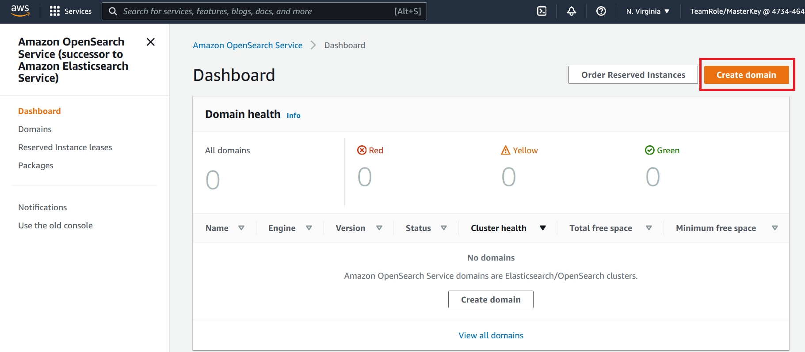
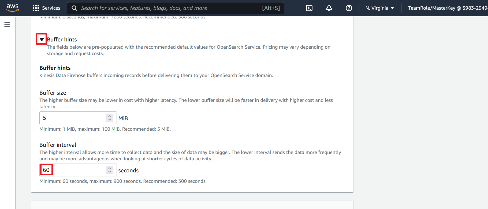
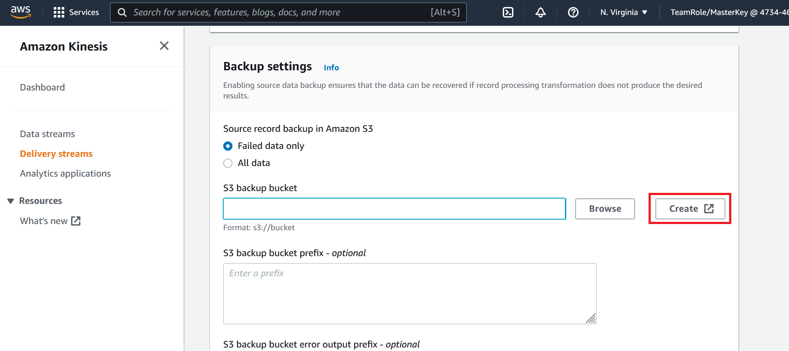

Console Deploy (Manual)
Only complete this section if you intend to set up your AWS environment manually via. the AWS console. If you have completed CloudFormation (Automated) skip this section and proceed to Send Log Data to Kinesis Fire Hose
Step 1 - Create an OpenSearch Domain
- Go to the OpenSearch Console
- Click on Create domain

- Enter the name
workshop-domainfor the OpenSearch Domain - Under the deployment type section, select
Development and testing - Under the network section, select
Public access - Under the fine-grained access control section select
Create master user - For the username enter
OSMasterUser - For the password enter
AwS#OpenSearch1 - Under the access policy section, select
Only use fine-grain access control - Leave all other settings at the default selections
- Click on Create
It will take approximately 5 - 10 minutes for your OpenSearch domain to be created. Upon successful creation you will see your OpenSearch domain status is active
 Do not proceed to the next step until you confirm that your domain status is active
Do not proceed to the next step until you confirm that your domain status is active
Step 2 - Create a Kinesis Firehose
- Go to the Kinesis Firehose Console
- Click on Create delivery stream

- Under the choose source and destination section for the source, select
Direct PUTfor the destination selectAmazon OpenSearch Service - Under the delivery stream name section name the stream
workshop-firehose

- Under the destination settings for the OpenSearch service domain, click on Browse and select the OpenSearch domain workshop-domain this is the OpenSearch domain we created in the previous step
- Name the index
workshop-log - Select
Every hourfor the Index rotation. This will produce a next index every hour

- Expand the Buffer hints section
- Adjust the buffer interval to
60seconds. This will write data from Kinesis Firehose to OpenSearch every 60 seconds

- Under the backup settings under the S3 backup bucket click on Create. This will (in a new browser window) open the create S3 bucket web page

- On the create bucket page provide a bucket name. You may name the bucket any valid name
- Click on Create bucket at the bottom of the page. Leaving all of the S3 settings the the default selections
- Return the browser window that we were using to configure our Kinesis Firehose and under the backup setting section for the S3 backup bucket, click on Browse
- Select the bucket you just created. If you do not see the bucket listed click on the small refresh button in the top right corner of the window that pops us when you click on the browse button

- At the bottom of the page click on Create delivery stream leave all other settings at the default selections
Step 3 - Configure Identity Access Management (IAM) Permissions
We now have an OpenSearch domain and Kinesis Firehose created. In order to send logs to OpenSearch via Kinesis Data Firehose we need to grant the IAM role that firehose uses permissions in OpenSearch.
Map IAM Role with OpenSeach Role
- Go to the OpenSearch Console
- Click on the workshop-domain OpenSearch domain you created earlier
- Click on the OpenSearch Dashboard URL. This should open the URL in a web browser window

- You will be prompted to log in. Using the user name
OSMasterUserand passwordAwS#OpenSearch1log in - If an additional pop up window is present after login asking about data upload click on Explore on my own
- If an additional pop up windows is present asking you to select your tenant select Global and click on Confirm
You should now see a window that looks like this

- Click on and expand the hamburger menu on the side bar of the OpenSearch home page
- Under the OpenSearch Plugins section click on Security

- On the security page click on Roles from the left hand menu

- On the roles page search for and click on
all_access

- On the all_access role page click on Mapped users
- Under the mapped users page click on Manage mapping

On the manage mapping page we need to map the IAM role the is used by Kinesis Data Firehose to the all_access OpenSearch role. This will give Kinesis Firehose the permissions it need to create, update indexes and write data.
For the purposes of this lab we will give Kinesis Firehose all_access in OpenSearch.
We need to find the ARN of the IAM role Kinesis Firehose is using. Keeping the Manage mapping page open in your browser, navigate to a new tab and
- Go to the Kinesis Firehose Console
- Click on the workshop-firehose listed. This is the Kinesis Data Fire hose we created earlier
- Click on the Configuration section

- On the configuration page scroll down to the permissions section
- Click on the IAM role

- This will open a new window in your web browser. Copy down the ARN of the IAM role

- Navigate back to the OpenSearch map user tab
- Enter the ARN we copied in step 18 and paste it in the backend roles section of OpenSearch console page
- Click on Map

Our AWS environment set up. When you are ready begin the next step Send Log Data to Kinesis Fire Hose